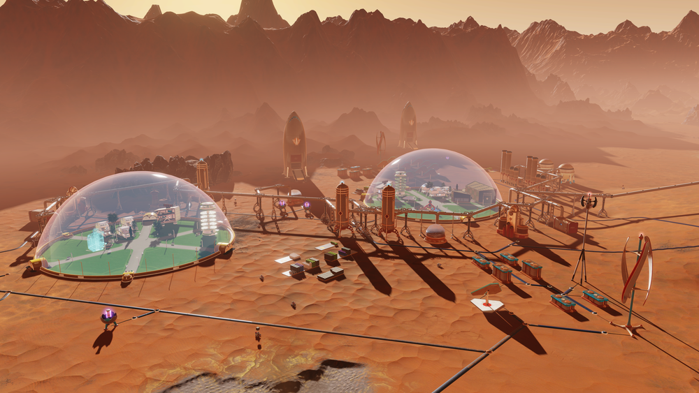

 Mars One aims to establish a permanent human settlement on Mars. Several unmanned missions will be completed, establishing a habitable settlement before carefully selected and trained crews will depart to Mars. Funding and implementing this plan will not be easy, it will be hard. The Mars One team, with its advisers and with established aerospace companies, will evaluate and mitigate risks and identify and overcome difficulties step by step. Mars One is a global initiative whose goal is to make this everyone’s mission to Mars, including yours. If we all work together, we can do this. We’re going to Mars. Come along!
| ADVANTAGES | DISADVANTAGES |
| Multinational team | Sometimes routin work |
| Professional austrnaut diet | Possibility of phychological problems |
| Possibility to work with allknown companies | Inability to see your family for a long time |
| Become a part of human history | Everyday wearing of Mars suit |